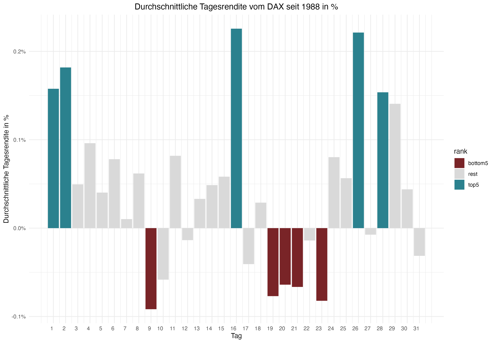
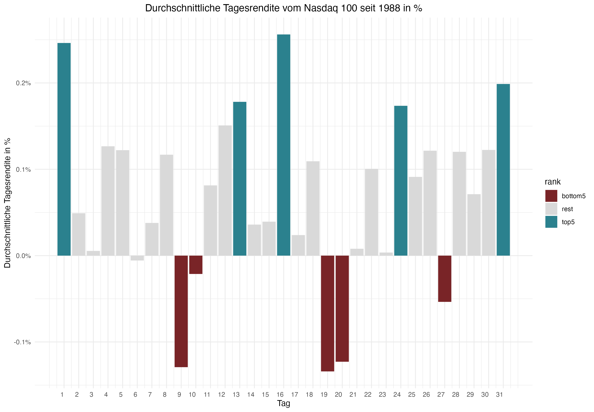
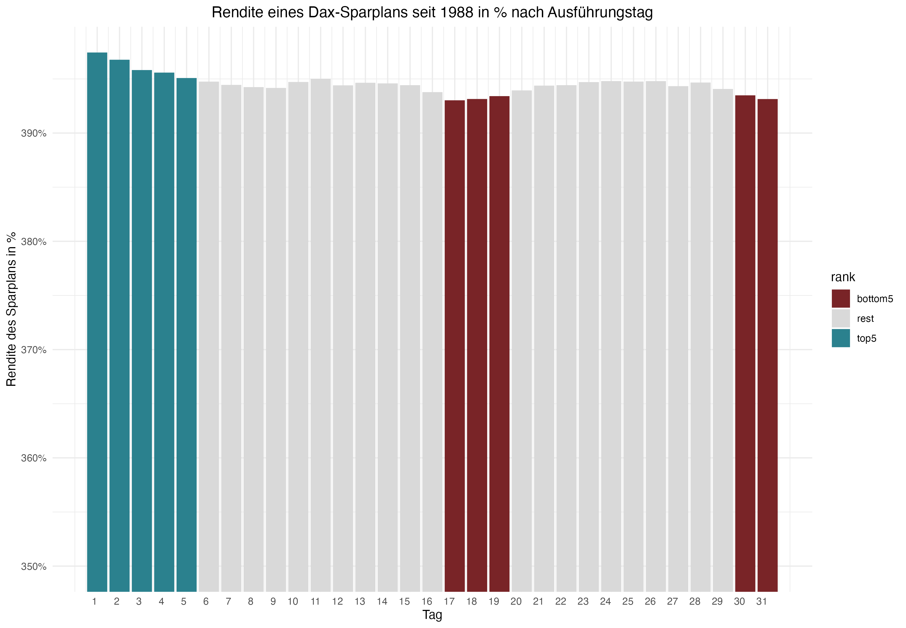
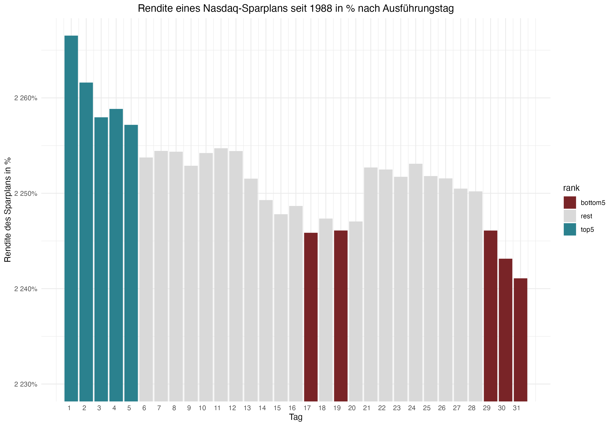

Bester Tag im Monat, um in den Dax-Index zu investieren

Bester Tag im Monat, um in den Nasdaq 100-Index zu investieren

Bester Tag im Monat, um in einen Dax-Sparplan zu investieren

Bester Tag im Monat, um in einen Nasdaq 100-Sparplan zu investieren
